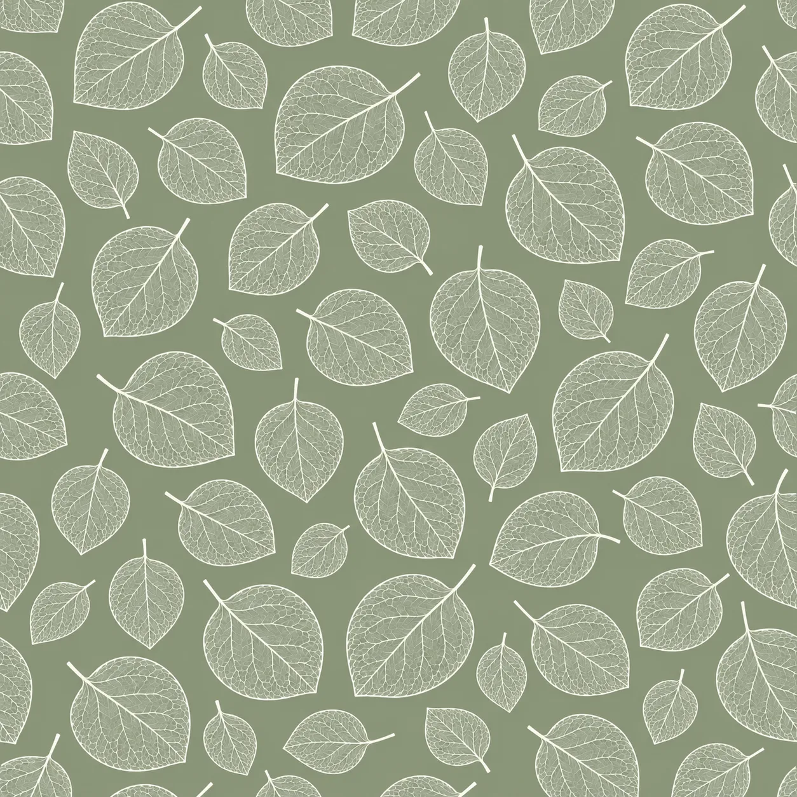

Have you ever gone out for an afternoon walk and spotted a beautiful wildflower?
Or maybe a fallen leaf with such an interesting shape that you immediately pulled out your phone and took a photo?
And then... those kinds of photos just keep piling up in your phone gallery. 😂
Well, this time, let’s not just leave them there. Open Pattern Studio AI and let’s turn one simple leaf photo into a creative asset.
From One Leaf to a Pattern
Here are the practical steps:
1. Upload your leaf photo
Upload your leaf photo, then try this prompt:
white leaf line art on sage background
2. Check the seamless pattern
Don’t download it just yet. Check whether the pattern connects smoothly when repeated.
3. Download your pattern.
That’s it?
Yes. 😂

What Can You Make With It?
That little leaf photo that was sitting in your gallery has now become a pattern that you can develop into all kinds of creative products.
- Fabric and textile design
- Wall decor, art, and stationery
- POD products like tote bags
- Assets for microstock marketplaces
So, the next time you find an interesting leaf, flower, or plant shape while you’re out walking...
Take a photo first. 🍃
Because the raw material for a creative idea might be right around you every day.
One leaf in.
One pattern out.
And who knows, maybe one more income stream. ☺️

✨ Syaima's Notes
Sometimes, you don’t need expensive materials to start creating something.
You just need to look at something ordinary in a different way.
A leaf might be just a leaf to someone else. But for a creator, it could be the beginning of a pattern, a product, or even a new opportunity.
Happy creating! 🍃